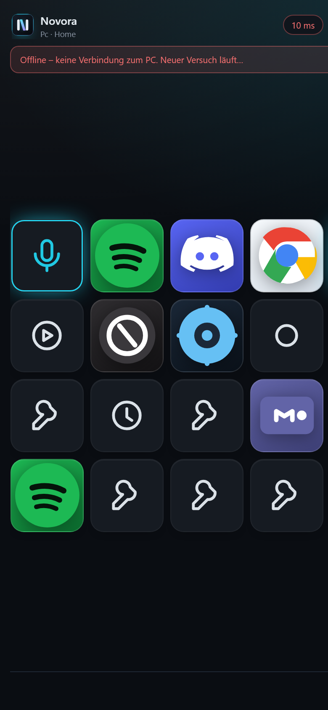
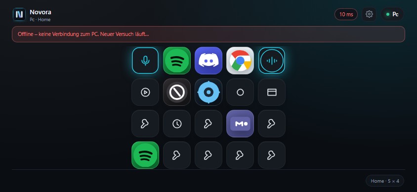

Tasten
Jede Taste macht genau das, was du willst
Hotkeys, Programme, URLs, Medien oder Seitenwechsel. Quadratisch, formatfüllend, ohne Text – Namen siehst du nur im Editor und als Tooltip.
Handy oder Tablet wird zum Steuerpult: Hotkeys, Apps, Lautstärke, Mixer und Profile. Alles im lokalen Netz – ohne Cloud, ohne Login, ohne Abo-Zwang.

Keine überladene Oberfläche. Tasten ohne Beschriftung, Zustände direkt sichtbar, alles am PC eingerichtet.
Hotkeys, Programme, URLs, Medien oder Seitenwechsel. Quadratisch, formatfüllend, ohne Text – Namen siehst du nur im Editor und als Tooltip.
Windows-Sessions live lesen und setzen. Stumm ist sofort sichtbar.
Lautstärke-OSD, Mikro-Puls, Aufnahme-Punkt. Du siehst sofort, was der PC macht.
Home, Musik, Mixer – links und rechts wischen. Raster pro Seite 3–8, Tasten bleiben immer quadratisch.
Code-Pairing oder Auto-Koppeln im privaten Netz. Jedes Gerät hat einen eigenen Schlüssel, Widerruf trennt sofort.
Layout, Logos, Farben und Aktionen am PC. Änderungen sind sofort auf allen Geräten.
Die PC-Software läuft im Hintergrund. Die App verbindet sich im WLAN – kein Konto, kein Cloud-Setup.
Installer starten. Der Server läuft danach automatisch auf Port 47830 und startet mit Windows.
APK öffnen, Handy-Browser oeffnen, QR-Code scannen oder IP eingeben. Android 8 oder neuer.
PC in der Liste wählen. Im privaten WLAN koppelt Novora automatisch – sonst per 6-stelligem Code.
Tippe auf die Punkte oder warte – die Vorschau wechselt zwischen Home, Musik und Mixer. Genau so fühlt sich die App an.
Direkt aus der App: quadratische Tasten, keine Beschriftung, Farben nur für Zustände.


Kein Cloud-Relay, keine offenen Ports nach außen. Der PC ist nur in deinem Netz erreichbar.
Keine Telemetrie, kein Benutzerkonto, keine Daten außerhalb deines Netzwerks. Layout und Geräte bleiben als JSON auf dem PC.
Port 47830 gehört nicht ins Internet. Für fremde WLANs ist Novora nicht gedacht – nutze es zu Hause oder im eigenen Netz.
Windows-Installer. Handy nutzt den Browser. Offline, ohne Konto.
503dc0c90b680a1c65441aea9a6a948a163a3902528f3c873e7376555cf52ddbe0e63539bd62c5390f650c5c5df357b04f3baa79a5350510042b387e96b08c37cd61df8fa07ea61a86569b178bb8f3a09cfdfe60a9d4bb84054ca6cb48cb5b03Installierte Programme liest Novora lokal direkt aus ihren Windows-EXE-Dateien – keine Fremd-Pakete, kein Upload. Für System- und Medienaktionen liefert Novora 70 eigene Strich-Icons.
70 eigene Strich-Icons für Oberfläche und Systemaktionen plus automatische EXE-Icon-Extraktion auf dem PC. Icon-Katalog ansehen →
Im Betrieb nicht – PC und Handy sprechen ausschließlich im lokalen WLAN/LAN. Nur für die einmalige Lizenzaktivierung und automatische Token-Verlängerung braucht der PC kurz Internet.
Der PC ist nur im lokalen Netz erreichbar. Geräte koppeln per QR-Code, 6-stelligem Code oder im privaten Netz automatisch. Port 47830 sollte nie ins Internet weitergeleitet werden.
Noch nicht. Spotify verlangt für die Web API ein Premium-Konto und hat neue Integrationen pausiert. Play/Pause/Weiter läuft bereits über Windows-Medientasten.
Android 8 oder neuer. Smartphones laufen automatisch im Querformat, Tablets drehen frei. Die Oberfläche kommt direkt vom PC und bleibt dadurch aktuell.
Novora nutzt signierte Lizenzschlüssel (Standard, Pro, Team) ohne Account-Zwang. Aktivierung und Geräteverwaltung erfolgen direkt über den Schlüssel – Details stehen auf der Lizenzseite.
Ruhige Nordic-Slate-Oberfläche, quadratische Tasten, keine Beschriftung. Echte App-Logos aus deinen installierten Programmen, Farbe nur für Zustände.